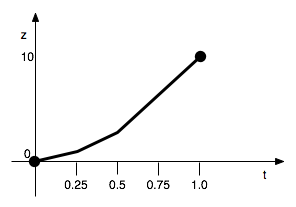

7.2 Primitive effects
These are effects that are provided as part of the style authoring framework and are used by name. For instance, the Translate primitive effect can be used to shift the scene in 3D space by a certain distance along a certain direction.
(effect "Translate" (A) (param "x" 1.0) (param "y" 0.0) (param "z" 0.0))
(effect name-string input-pattern (param pname-string value) ....)
7.2.1 Effect name
Effects have simple string names such as "Translate", "Rotate" and "Alpha". The names of effects are case-sensitive, so you cannot use "translate" instead of "Translate".
7.2.2 Input pattern
Effects that don’t take any input are specified using () as the input pattern.
Effects that apply to one input such as segment effects and global effects are specified using the input pattern (A) (or any symbol in place of A).
Transitions are nothing but two-input effects and therefore are specified using an effect pattern like (A B) (again, any symbols may be used in place of A and B).
The reason for the inclusion of the input pattern is that the body of an effect can refer to the inputs by name if necessary.
7.2.3 Parameter specification
(param pname-string ....)
Each (param ....) expression that appears within an (effect ..) expressions specify values for one of the effect’s parameters. Parameter names are also case-sensitive, just like effect names.
7.2.4 Types of values
Values of type integer (10, 5, etc.), fractional (3.14, 2.718, etc.) and string ("hello", "olah", etc.) are valid for use in the value slot of a parameter specification. However, the types accepted by a parameter are determined by the effect. For example, the Translate effect’s x parameter has to be a fractional (aka floating point) value. It cannot be a string. The types of values accepted by parameters are documented in the effect’s documentation page.
7.2.5 File and directory values
Some effects have parameters that accept file names. For example, the PictureQuad effect’s File parameter has to be set to the path to the image file to display in the scene.
Usually, a style will need to refer to images such a gradient maps in its data folder and the resource function is available for this purpose.
(resource "image.png")
will expand to the full path to the "image.png" file relative to the style’s data folder.
(param "File" (resource "image.png"))
7.2.6 Fixed parameters
(param "z" 0.5)
It should be fairly obvious that the above expression specifies the z parameter of an effect to the floating point value 0.5. The parameter z will take on this fixed value for the period that the effect is being applied.
(param "z" (+ 0.5 ZOOM))
Such an expression is computed only once and the value generated by the expression will be used as the value of the parameter during the entire time the effect is applied.
7.2.7 Explicit animation curves
(param "z" 0.0 (linear 0.25 0.25) (linear 0.5 2.0) (linear 1.0 10.0))
The (linear t val) expression causes the parameter’s value to change over time to the given value. The above example describes a z-animation according to the graph shown below -

Only integer and fractional valued parameters can be animated using linear.
(param "z" 0.0 (at 0.25 0.25) (at 0.5 2.0) (linear 1.0 10.0))
Therefore you can use combinations of at and linear to define piece-wise linear animation curves.
7.2.7.1 Time specification
The time you give in (linear t ..) and (at t ..) expressions is called progress time. 0.0 refers to the start of the effect, 1.0 refers to the end of the effect and 0.5 refers to “half way through the effect”. Although using progress time (or progress for short) usually suffices for a broad range of animations, you occasionally need to specify animation times in seconds.
(effect "Alpha" (A) (param "Alpha" 1.0 (at 0.5 1.0) (linear 1.0 0.0)))
(effect "Alpha" (A) (param "Alpha" 1.0 (at (effect-time 0.5) 1.0) (linear 1.0 0.0)))
(at (progress 0.5) 1.0)
(at (progress (* 0.5 DELAY)) 1.0)
progress takes a progress value and converts it into absolute time (in seconds) within the muvee. Similarly effect-time takes a time in seconds relative to the start of the effect and converts it into absolute time within the muvee. To convert between these, use the following formulae -
(progress p) = start + p * (stop - start)
(effect-time t) = start + t
The words start and stop when used within the body of an (effect ....) expression refer to the start and stop time of the particular instance of the effect for which the body is being evaluated. Therefore you can use these words as values to convert between any two time bases.
7.2.8 Computed animation curves
(effect "Translate" (A) (param "y" 0.0 (fn (t) (* 4 h t (- 1 t)))))
(param "y" 0.0 (fn (t) (* 4 h t (- 1 t))) 2)